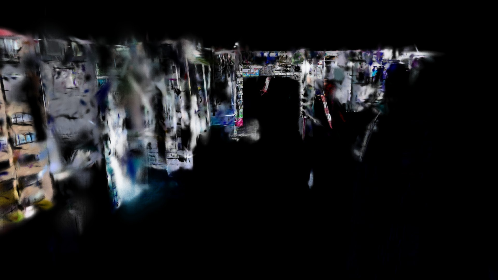
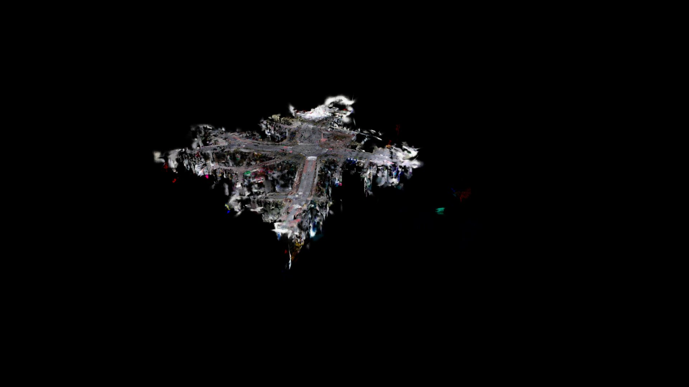

01 なぜIsaac Simなのか
3DGSスキャンの持ち込み先は、用途によって変わります。映像素材として使うならUE5がいちばん自由が利きますが、ロボット・自律移動・センサーシミュレーションが目的ならNVIDIA Isaac Simが本命になります。実在の場所を、そのまま検証環境にできるからです。
- 実在の場所でロボットを動かせる ── 架空の空間ではなく、実際にスキャンした現場をシミュレーション環境にできます。
- 物理シミュレーションと同居できる ── PhysXの剛体・関節・センサーを、実写ベースの背景の中で動かせます。
- 学習用の画像を量産できる ── 実在の風景を背景に、任意のアングルでカメラ画像を生成できます。
Isaac Sim 6.0はガウシアンスプラットをネイティブに描画します。RTXのパストレーシングに参加するため、被写界深度やモーションブラーもそのまま効きます。ただし実際に持ち込むと、ドキュメントに書かれていない壁がいくつかあります。
02 用意するもの
- Isaac Sim
- 6.0以降。展開後に約40GBになるので、空き50GBを見ておきます
- スキャンデータ
- 3DGSの
.ply - 変換ツール
- PlayCanvas splat-transform（npm・無料）
- USD変換
- Isaac Simに標準同梱されているので、追加インストールは不要です
インストール先に C:\Program Files は避けてください。動作中にデータを書き込むため、管理者権限が必要な場所に置くと余計なトラブルを招きます。
.ply のほか、主要なスキャナやビューアの独自形式をそのまま読み込めます。中間形式に落とす手間が省けるうえ、これらのパッケージには衝突用メッシュやスキャン時のカメラ軌跡が同梱されていることがあり、後の工程で効いてきます。手元にあるなら、元のフォーマットから始めるのが得です。03 最初の関門：描画上限を超えると何も映らない
大きめのスキャンを扱うなら、まずここを押さえてください。
厄介なのは、失敗しても各工程が正常終了することです。USDファイルには全点の座標・スケール・不透明度・色が正しく書き込まれ、ステージに配置すればプリムの型も正しく認識されます。表示だけが行われません。
この上限は公式ドキュメントに記載がありません。手がかりは、ログに残る Failed to create TLAS の1行だけです。仕様上の正解は「点数を減らすか、複数プリムに分割する」で、この記事では前者を扱います。
Gaussian prim loaded で検索します。点数付きで出ていれば描画対象として登録されています。代わりに Failed to create TLAS が出ていれば表示されません。真っ黒な画面をカメラの問題と誤診しないために、先にここを見るのが確実です。04 読み込みの手順
点数を上限未満に落とす
splat-transformの --decimate に目標点数を渡します。
# 絶対数で指定（2^24 = 16,777,216 未満にする）
splat-transform input.ply -d 16500000 output.ply
# 割合でも指定できる
splat-transform input.ply -d 95% output.plyこの処理は単純な間引きではなく、近接するガウシアンを段階的にペアマージしていく方式です。ランダムに削除するより情報の欠落が少なく、削減率が数％程度なら見た目の劣化はほとんど分かりません。
USDに変換してステージに配置する
Isaac Sim内のPythonから、同梱のコンバータでPLYをUSDへ変換します。出力の拡張子は .usdc にしてください。.usdz にすると内部がテキスト形式になり、ファイルサイズが2倍以上に膨れます。
配置するときは、参照する前に既存のガウシアンスプラットを掃除します。古いデータが残っていると「新しいシーンの一部だけが表示されている」ように見えて、原因の切り分けが極端に難しくなります。
from omni.kit.converter.gsplat import convertPlyUSD
convertPlyUSD(r"output.ply", r"scene.usdc")
import omni.usd
stage = omni.usd.get_context().get_stage()
# 既存のガウシアンプリムを削除
for p in list(stage.Traverse()):
if p.GetTypeName() == "ParticleField3DGaussianSplat":
stage.RemovePrim(p.GetPath())
# 型を指定せず OverridePrim で参照する
prim = stage.OverridePrim("/World/Scene")
prim.GetReferences().AddReference(r"scene.usdc")OverridePrim で作成してください。上下反転を補正する
コンバータは上方向の軸を指定できますが、Z-upで作られたスキャンデータをY-up指定で変換すると上下逆さまになります。建物が地面から下向きに伸びる状態です。
これに気づかないまま「上空から見下ろす」つもりでカメラを置くと、地面を裏から見ることになり画面は真っ暗になります。プリムにX軸まわりの−90度回転を適用することで、元の向きに戻ります。
from pxr import UsdGeom
x = UsdGeom.Xformable(prim)
x.ClearXformOpOrder()
x.AddRotateXOp().Set(-90.0)05 カメラを置く
実用上のコツは、カメラ位置を自分で計算しないことです。バウンディングボックスから距離を自動計算する方法は、疎な外れ値に引きずられて機能しません。スキャンデータは撮影範囲の外にもまばらな点が散らばるため、全体の範囲は実際に見たい領域よりはるかに大きく算出されます。
代わりに、スキャン時に実際に通った軌跡の座標を使います。多くのスキャナは移動の軌跡を姿勢データとして出力しているので、そこから1点を選び、目線の高さ（1.7m前後）にカメラを置いて水平方向を向けます。
向きの計算には SetLookAt().GetInverse() を使い、AddTransformOp() に設定します。この形なら行列の転置ミスが起きません。
from pxr import Gf, UsdGeom
eye = Gf.Vec3d(...) # 軌跡上の1点＋目線の高さ
target = Gf.Vec3d(...) # 見たい方向
xf = Gf.Matrix4d().SetLookAt(eye, target, Gf.Vec3d(0,0,1)).GetInverse()
cx = UsdGeom.Xformable(cam_prim)
cx.ClearXformOpOrder()
cx.AddTransformOp().Set(xf)軌跡を使う理由は単純で、スキャンした人が通った場所こそ、そのデータがいちばん高密度に記録されている場所だからです。撮影範囲の外にカメラを置くと、そもそも撮影されていない面を見ることになります。姿勢データが手元にない場合も、まず近距離から試写して、写った範囲を見ながら引いていくほうが確実です。


await app.next_update_async() を150フレーム以上回してください。待ちが足りないと真っ黒な画像が保存されます。06 産業用シミュレーションで使う場合の弱点
ここからが本題です。3DGSは「見た目」に関しては圧倒的ですが、産業用シミュレーションで求められる情報をほとんど持っていません。Isaac Sim上で実際に出力を取って確認した結果を整理します。
弱点1：シーン全体が「1つの塊」で、オブジェクト単位に分離できない
これが最大の制約です。3DGSは数千万個のガウシアンが並んだ1つのプリムであり、「この建物」「この信号機」「この車」といった単位が存在しません。3DモデルのようにオブジェクトA・Bを選び分けることはできず、特定の物体だけを移動・非表示・差し替えすることもできません。
シミュレーションでは「対象物だけを動かす」「障害物を入れ替える」といった操作が前提になりますが、スキャンしたままの3DGSではそれができません。
弱点2：セマンティックラベルが「シーンに1つ」しか付かない
Isaac Simにはセマンティックセグメンテーション（画素ごとに「これは道路」「これは建物」と分類した画像）を出力する機能があり、これは知覚AIの学習データ生成の中核です。ガウシアンスプラットにもラベル自体は付与でき、セグメンテーション出力にも反映されます。
ただしラベルを付けられる単位はプリムです。弱点1のとおりシーン全体が1プリムなので、結果として付くラベルもシーン全体で1つだけになります。実際に出力を取ると、建物も道路も歩道も信号機も、すべてが同じIDで塗られます。「道路領域だけを学習させたい」「標識だけを抽出したい」といった用途には、このままでは使えません。
弱点3：物理的な当たり判定を持たない
ガウシアンスプラットは見た目のデータであり、面の情報を持ちません。そのため物理エンジンの衝突判定に参加できません。ロボットは壁をすり抜け、床を貫通して落下します。見た目には床があるのに、物理的には何もない空間です。
弱点4：ライティングを後から変えられない
3DGSは撮影時の光を色情報として焼き込んでいます。曇天でスキャンしたデータは、シーンに太陽光を追加しても曇天のままです。時間帯や天候を振った学習データを作りたい場合、この性質が制約になります。
07 弱点への対処
いずれも回避策があります。共通する考え方は「見た目は3DGS、それ以外はメッシュに持たせる」という役割分担です。これはNVIDIAが示しているアーキテクチャでもあります。
対処1：コリジョン用メッシュを併用する（物理）
3DGSと同じ位置に、簡易的なメッシュ（プロキシメッシュ）を重ねて配置し、そちらにコリジョンを設定します。見た目はスプラット、当たり判定はメッシュが担当し、メッシュ自体は非表示にします。
from pxr import UsdPhysics, UsdGeom
mesh = stage.GetPrimAtPath("/World/CollisionMesh")
UsdPhysics.CollisionAPI.Apply(mesh) # 当たり判定を付与
UsdGeom.Imageable(mesh).MakeInvisible() # 見た目は消すメッシュの入手先は3つあります。スキャナが同時出力したメッシュを使うのがいちばん手軽です。無い場合は、splat-transformが3DGSから衝突用メッシュを直接生成できるので、それを使います。あるいは床・壁・障害物を単純な箱で近似します。用途が「ロボットが通れるか」の検証なら、箱で十分なことも多いです。
対処2：領域ごとに分割してラベルを付ける（セマンティクス）
ラベルの単位がプリムなら、プリムを分ければラベルを分けられます。スプラットを空間的に切り分け、別々のUSDとして書き出したうえで、それぞれにラベルを付与します。
分割はIsaac Simに入れる前の工程で行います。SuperSplat（PlayCanvasの無料エディタ）などで領域を選択して個別に書き出すか、座標で機械的に切り出します。ただし手間は分割の細かさに比例します。「道路／建物／それ以外」程度の粗い分類なら現実的ですが、物体ごとの細かいラベル付けを手作業で行うのは実用的ではありません。
対処3：ライティングは割り切るか、別手段を使う
3DGS本体のリライトはIsaac Simの守備範囲外です。天候や時間帯のバリエーションが必要なら、出力した画像をあとから画像生成AIで変換するか、スキャン自体を条件を変えて複数回行います。UE5側にはリライト対応のプラグインがあるので、そちらで作った素材を使う手もあります。
使いどころの見極め
これらを踏まえると、3DGSが向いている用途とそうでない用途は、かなりはっきり分かれます。
| 用途 | 3DGS単体 | 補足 |
|---|---|---|
| 実写品質の背景・見た目の検証 | ◎ | いちばんの強み。実在の現場をそのまま再現できる |
| カメラ画像の生成（背景として） | ○ | アングルは自由。ただし画素単位の正解ラベルは付かない |
| ロボットの移動・衝突検証 | × | コリジョンメッシュの併用が必須 |
| セグメンテーション学習データ | × | ラベル付きメッシュを重ねる必要がある |
| 物体単位の操作・入れ替え | × | 分割してからでないと不可。CGアセットを併用するほうが早い |
| 照明条件のバリエーション | × | 焼き込み済み。別手段が必要 |
整理すると、3DGSは「実在する環境を、実写品質の背景として持ち込む」ための技術です。その中で動かす対象物や、正解ラベルが必要な部分は、従来どおりメッシュで用意する。この住み分けができていれば、3DGSは非常に強力な選択肢になります。
08 まとめ
読み込みの手順は「点数を224未満に間引く → .usdc に変換 → OverridePrim で参照 → 向きを補正 → 軌跡上にカメラを置く」という一本道です。つまずきやすいのは最初と最後で、点数上限を超えているとエラーが出ないまま何も表示されず、カメラをスキャン範囲の外に置くと破綻した面しか見えません。この2つを押さえれば、あとは素直に進みます。
産業用途で使うなら、3DGSは「実在する環境を実写品質の背景として持ち込む技術」であり、それ以上でも以下でもないと割り切るのが近道です。オブジェクト単位の分離もセマンティックラベルも当たり判定も、スプラット自体は持っていません。これらが必要なら、メッシュを別レイヤーとして重ねて役割分担させます。裏を返せば、「見た目の忠実さ」だけは他の手段では代えがたいということでもあります。
用途に応じてUE5と使い分けるのも現実的です。映像素材としての出力はUE5×XGRIDs SDKの記事にまとめています。3DGSの活用について気になることがあれば、お気軽にお問い合わせください。
この記事で使っている渋谷スクランブル交差点の3DGSデータは、
ロケハン3Dのオンライン版で購入・閲覧できます
PLY／OBJ形式（3DGSウォークスルー付き）で提供。スタンダードライセンス ¥200,000〜（商用・非商用利用可）。同じデータでIsaac Simのワークフローを試してみたい方は、ぜひご覧ください。
物件データを見る →